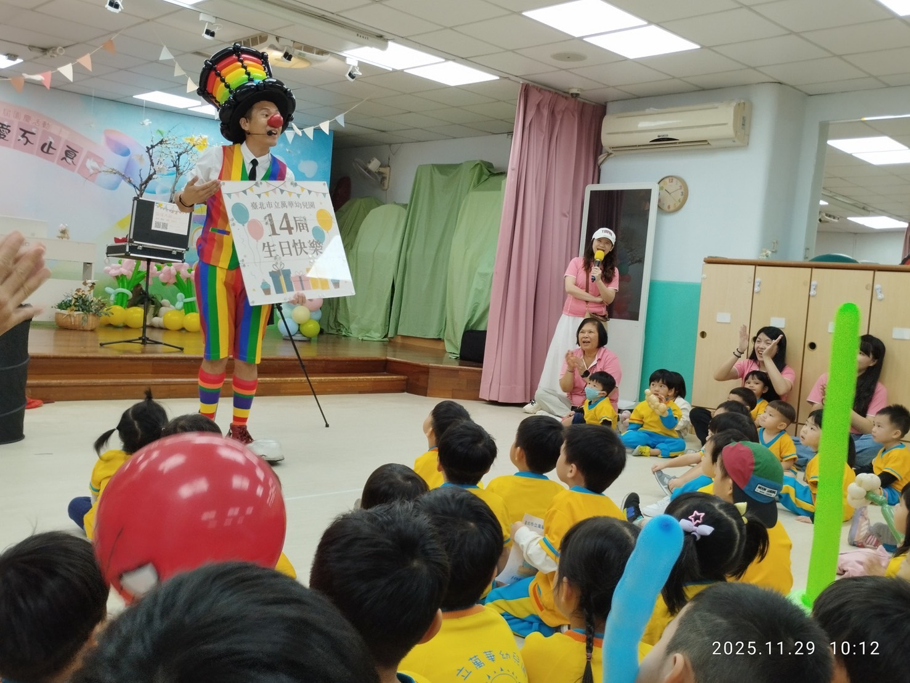
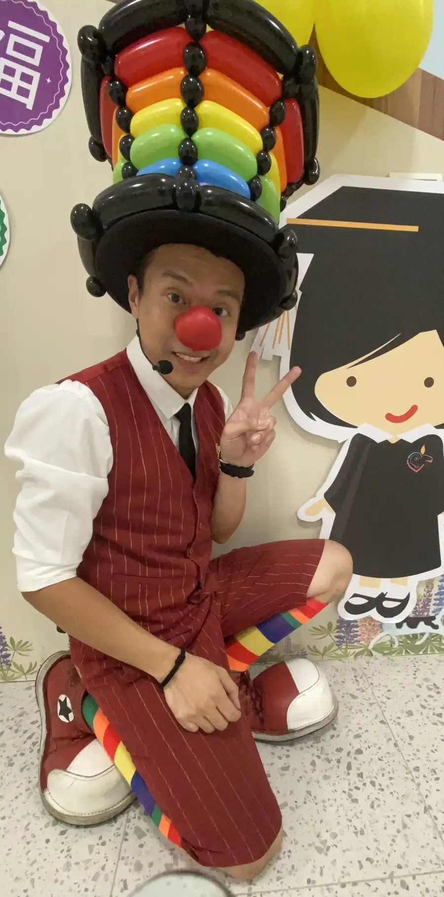
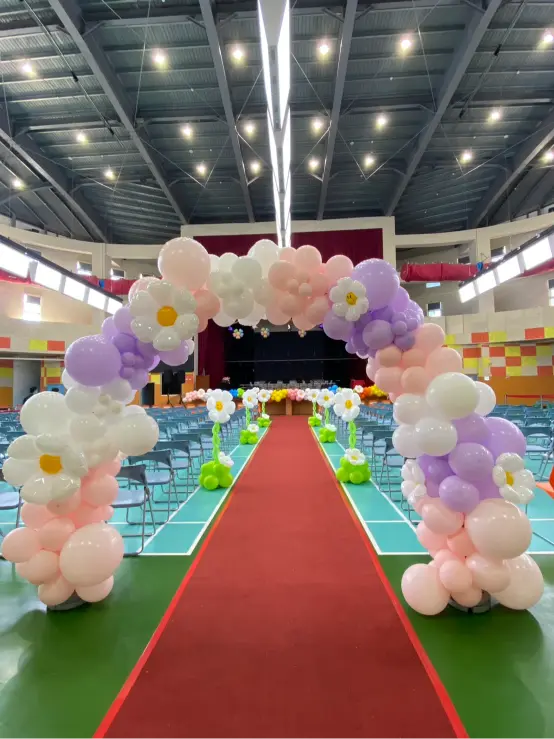
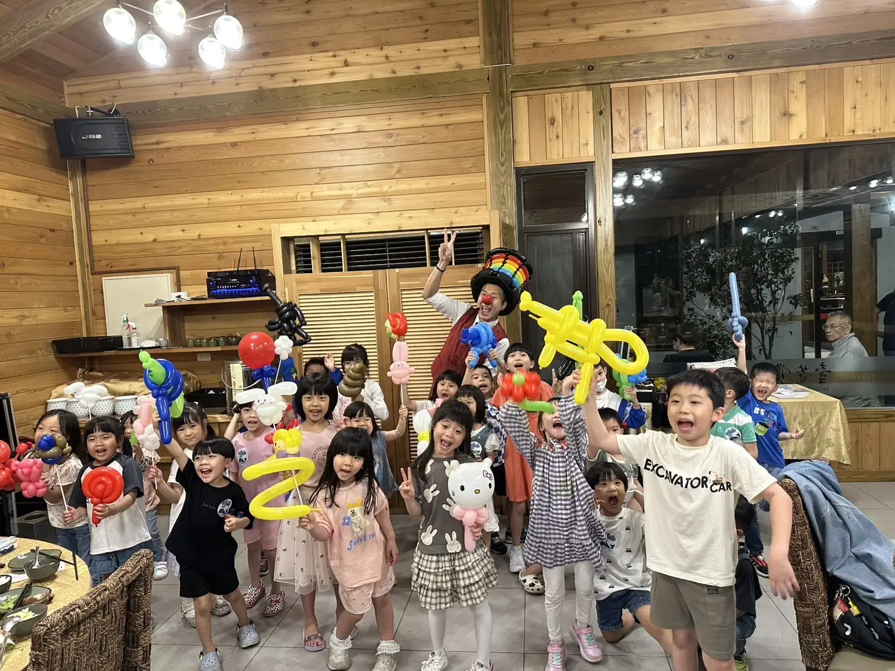
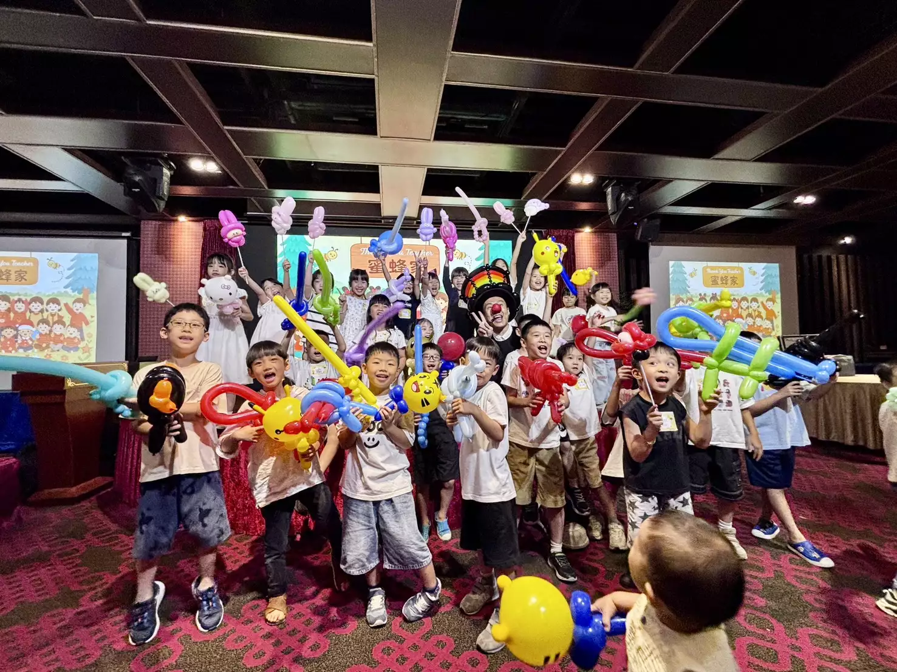
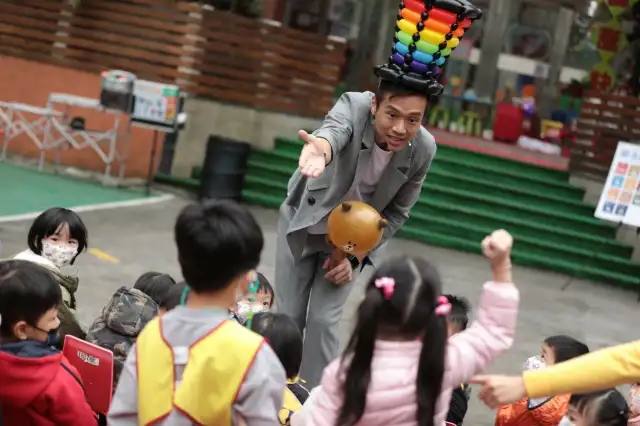

幼兒園 / 校園活動整合方案
北中七縣市皆可安排｜孩子看得懂、老師也好控場的校園活動方案
不知道幼兒園活動該怎麼安排？想讓孩子看得懂、玩得進去，現場熱鬧又不失控？氣球大叔 Sony 的幼兒園 / 校園活動整合方案，把兒童互動魔術、造型氣球互動與節慶表演整合在同一套流程裡，讓老師、園方與承辦單位不用分別找節目、排流程、顧秩序，一次就能完成一場有笑聲、有參與感、又有記憶點的校園活動。
無論是幼兒園教室、活動中心、禮堂、操場，或親子餐廳包場空間，都能依孩子年齡、人數、場地大小與活動性質彈性安排。從班級同樂會到全園大型節慶，都能調整成最適合的版本，幫助老師輕鬆維持活動節奏。
🏫 這頁適合哪幾種幼兒園 / 校園活動？
- 幼兒園園慶 / 園遊會： 全園同樂，互動性最強，聚客與歡樂效果極佳。
- 畢業典禮 / 結業式： 結合溫馨與驚喜，給畢業生最難忘的校園回憶。
- 兒童節活動： 專屬孩子的節日，用魔術與氣球打造校園專屬遊樂園。
- 聖誕節 / 中秋節 / 萬聖節節慶活動： 可搭配節日主題調整橋段與氣球造型，節慶氛圍滿點。
- 班級同樂會 / 小型歡樂活動： 單一班級或學年，近距離互動，孩子參與度最高。
- 主題教學活動 / 品格與永續教育互動： 寓教於樂，將教育意義自然融入歡樂的魔術與氣球表演中。
⏱️ 幼兒園活動流程怎麼安排最剛好？
- 開場暖場： 先把孩子注意力集中，讓活動節奏順利進入狀況。
- 互動魔術主秀： 節奏明快、畫面清楚，讓多數孩子都能投入參與笑聲不斷的魔術劇場。
- 孩子上台參與： 邀請孩子成為魔術小助手，建立自信與獨特的舞台記憶點。
- 造型氣球互動 / 派送： 結合有獎徵答或全班發送，延續活動熱度，滿足孩子的期待。
- 合影拍照 / 節慶橋段收尾： 與大叔和氣球作品大合照，留下校園最完整的歡樂畫面。
📍 幼兒園 / 校園活動實例與場地安排參考
我們將最貼近真實幼兒園與校園活動的案例整理如下，幫助您找到最適合的活動靈感。不同場地與活動性質適合不同安排方式：想要大型互動可選園慶、畢業典禮與全園活動，想要氣氛溫馨又有參與感，則很適合班級同樂會、結業式與主題教學活動。
-
🎈 園慶 / 大型互動：台北萬華幼兒園園慶
適合全園大集合！大型互動魔術秀與氣氛帶動，讓禮堂/操場充滿笑聲。

👉 台北萬華幼兒園園慶｜全園大型魔術氣球互動秀 -
🎈 畢業典禮：桃園中堅幼兒園畢業典禮
將歡樂驚喜與感恩回憶結合，為大班畢業生準備最棒的送別禮物。

👉 桃園中堅幼兒園畢業典禮｜歡樂魔術秀與氣球派送 -
🎈 校園佈置：桃園大溪畢業典禮場地佈置
不僅有表演，更能包辦校園舞台與拍照區的節慶主題氣球佈置。

👉 桃園大溪幼兒園畢業典禮｜舞台氣球與拍照區佈置實錄 -
🎈 班級歡樂活動：龍潭康橋幼兒園 Balloon Party
專屬單一班級或學年的派對，近距離互動，每個孩子都能拿到氣球。

👉 桃園龍潭康橋幼兒園｜專屬班級 Balloon Party 歡樂時光 -
🎈 班級歡樂活動：台中南屯幼兒園 Balloon Party
不受空間限制，將平凡的教室瞬間變身充滿笑聲的魔術氣球樂園。

👉 台中南屯幼兒園｜熱鬧互動氣球秀與同樂會 -
🎈 教育主題活動：基隆 SDGs 幼兒園活動
寓教於樂！可配合校園宣導主題（如永續、品格）融入互動表演中。

👉 基隆幼兒園 SDGs 主題教學｜結合教育意義的互動魔術 -
🎈 結業式補充案例：土城鹿角公園派對
學期末的完美收尾！適合校外餐廳包場或活動中心的期末同樂會。
幼兒園 / 校園活動常見問題 FAQ
Q：幾歲的小朋友最適合安排這類活動？
A：幼兒園小班到大班，甚至是國小低年級都很適合。我們會依據不同年齡層的孩子調整魔術的難易度、語速與互動方式，確保每個階段的孩子都能看得懂、玩得投入。
Q：幼兒園人數很多也適合嗎？
A：非常適合！大叔具備豐富的大型校園活動控場經驗。人數較多時，我們會透過視覺動作較大的舞台魔術，確保後排的孩子也能清楚觀賞並參與互動。
Q：教室、禮堂或操場都可以安排嗎？
A：都可以。我們能適應各種校園場地，從單一班級的小教室、全園集合的禮堂，到戶外的操場，都能彈性調整音響設備與表演道具。
Q：可以依兒童節、畢業典禮、聖誕節做主題調整嗎？
A：可以。可依兒童節、畢業典禮、聖誕節、中秋節等不同活動主題，調整表演橋段、互動方式與氣球內容，讓整場活動更貼近節慶氛圍與校園需求。
Q：表演後可以安排造型氣球互動嗎？
A：這是最受學校歡迎的組合！魔術主秀結束後，安排造型氣球派送或有獎徵答互動，能完美延續活動熱度，滿足孩子的期待。
Q：如果活動時間只有 30～60 分鐘，怎麼安排最剛好？
A：可以。如果時間較短，我們會協助把流程精簡成最有感的版本，例如互動魔術主秀搭配簡短氣球互動，讓孩子有驚喜、老師也不會覺得節奏太趕。
🎉 想安排一場孩子看得懂、老師也好控場的幼兒園活動嗎？
園慶、畢業典禮、兒童節、班級同樂會，都能依年齡、人數與場地條件安排最適合的方案。
📝 詢問格式：日期 / 地點 / 年齡層 / 人數 / 活動性質 / 預算範圍
💬 點我加 LINE 討論校園活動
✨ 老師與園方請放心：大叔會幫您把氣氛與秩序一起顧好，讓活動順利又圓滿。